过去二十年，中国完成了从“出口驱动的高速追赶”到“中速增长、出口仍具韧性、内需与人口结构双重约束增强”的阶段转换。以国家统计局口径，GDP 实际增速由 2005—2010 年年均约 10% 回落至 2020—2025 年年均约 5%；社会消费品零售总额名义增速由两位数降至 2024、2025 年的 3.5%、3.7%，2026 年前三季度进一步放缓至 1.1%。物价方面，CPI 在 2023—2025 年连续接近零通胀（分别为 0.2%、0.2%、0.0%），与日韩早期深度老龄化阶段的低通胀特征有相似之处。
按可比价核算，中国 GDP 实际增速经历清晰换挡：2005—2010 年仍处两位数区间（峰值 2007 年 11.4%），2011—2015 年降至 7%—9%，2016—2019 年稳定在 6%—7%，2020 年后进入 2%—8% 的波动中速区间，2023—2025 年连续三年约 5%。2026 年前三季度同比增长 4.6%。人均 GDP（IMF 现价美元）由 2005 年约 1,773 美元升至 2025 年约 13,970 美元，约增长 6.9 倍，接近同期马来西亚水平，约为日韩的 38%。
物价方面，过去二十年多数年份 CPI 涨幅在 1%—3%，但阶段性冲击显著：2007—2008 年与 2011 年食品价格推升通胀，2009 年通缩，2023—2025 年则连续低通胀/零通胀。这与总需求偏弱、食品价格下行、房价调整压制居住相关预期有关，也使得“名义增长—财政收入—债务可持续”链条更加敏感。
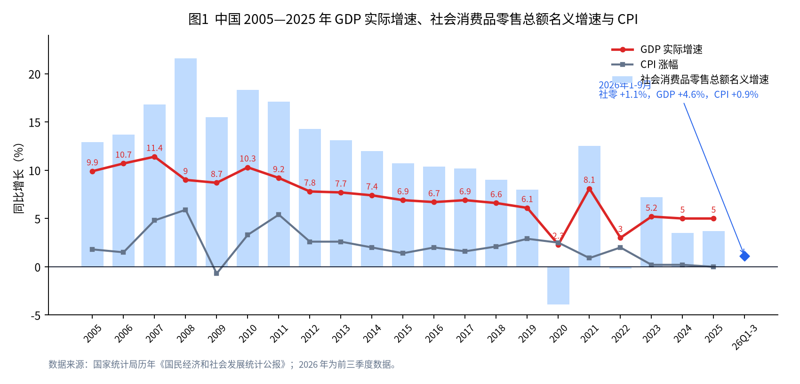
社会消费品零售总额由 2005 年 6.72 万亿元增至 2025 年 50.12 万亿元。名义增速轨迹同样换挡：2005—2011 年多数年份在 13%—22%，2012—2019 年由 14% 降至 8%，2020、2022 年受疫情冲击为负或接近零，2023 年反弹至 7.2% 后，2024、2025 年回落至 3.5%、3.7%。以修订后现价 GDP 衡量，社零/GDP 在 2015—2017 年升至约 43% 的峰值，2025 年回落至约 35.8%。
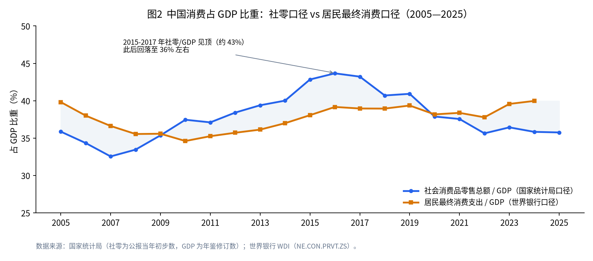
货物出口经历三阶段：2005—2008 年高增与高依存度（出口/GDP 一度超过 30%）；2009 年金融危机冲击后回升，但依存度趋势性下降；2015—2016 年人民币计价出口负增长后，疫情后再度走强。2024、2025 年出口同比分别增长 7.1%、6.1%；2026 年前三季度出口增长 16.4%，拉动作用显著。出口/GDP 由 2005 年约 33.4% 降至 2024 年约 20.4%（世界银行货物与服务出口口径），说明外需贡献相对下降，但绝对出口规模仍全球领先。
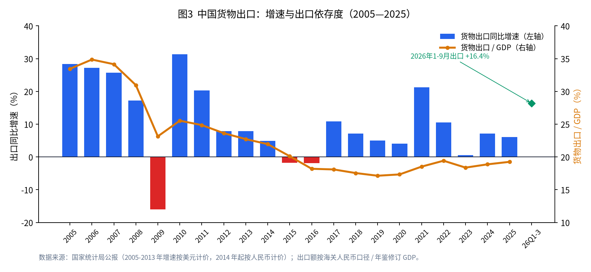
讨论“中国税负”必须区分口径：
| 口径 | 2025 年水平 | 近二十年走势 |
|---|---|---|
| 税收收入 / GDP（小口径） | 12.6% | 2005 年 15.4% → 2012 年峰值 18.4% → 2025 年 12.6% |
| 一般公共预算收入 / GDP（中口径） | 15.4% | 与税收走势大体同步，近年受减税降费与非税波动影响 |
| 一般公共预算 + 土地出让 + 社保基金 / GDP（宽口径） | 27.5% | 2010 年约 31.6% → 2018 年峰值约 35.0% → 2025 年 27.5% |
| IMF 广义政府收入 / GDP | 25.0% | 2015 年约 28.6% 后震荡下行，低于日韩、高于越马印 |
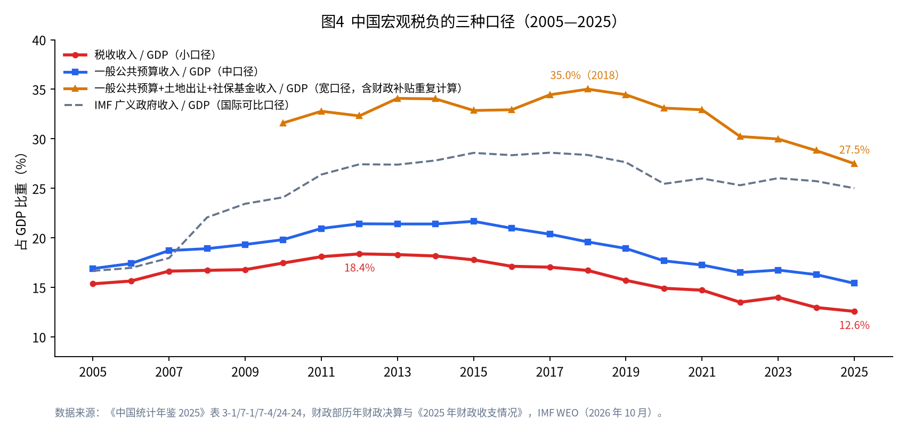
2025 年税收收入 17.64 万亿元，结构仍以增值税、企业所得税为主；土地和房地产相关税收（房产税、契税、土地增值税、城镇土地使用税、耕地占用税）合计约 1.77 万亿元，已明显低于高峰年份。与此同时，国有土地使用权出让收入由 2021 年峰值 8.71 万亿元降至 2025 年 4.15 万亿元，是宽口径宏观税负回落的重要驱动。
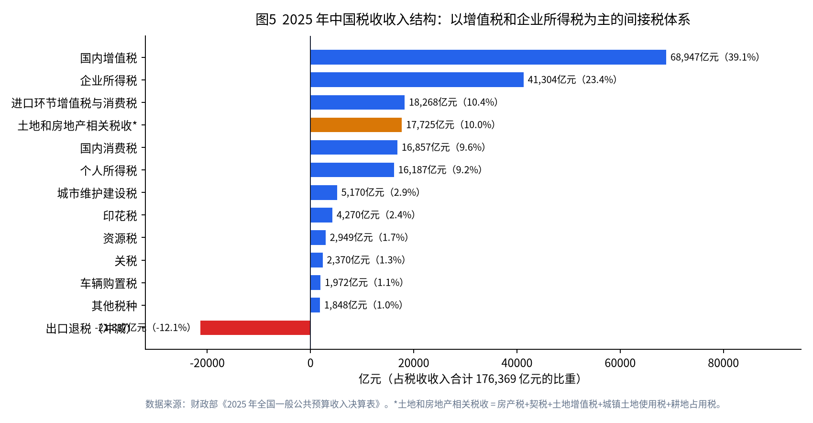
按 IMF WEO（2026 年 10 月）实际 GDP 增速分期均值：
| 阶段 | 中国 | 日本 | 韩国 | 越南 | 马来西亚 | 印度 |
|---|---|---|---|---|---|---|
| 2005—2010 | 11.3 | 0.4 | 4.4 | 6.5 | 4.6 | 7.2 |
| 2011—2015 | 7.9 | 1.2 | 3.1 | 6.2 | 5.3 | 6.5 |
| 2016—2019 | 6.6 | 0.7 | 3.0 | 7.1 | 4.9 | 6.3 |
| 2020—2025 | 4.9 | 0.4 | 2.0 | 5.7 | 3.5 | 5.6 |
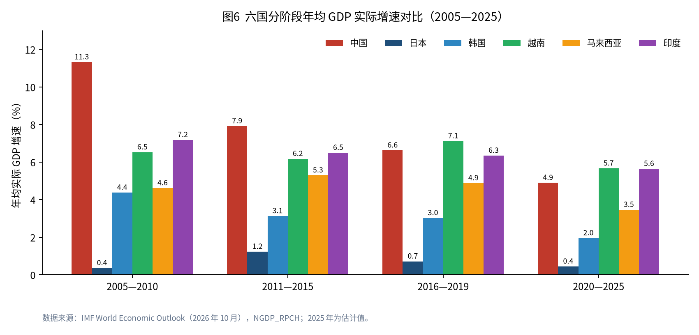
人均 GDP 轨迹显示：中国完成了对越南、印度的数量级跨越，并在 2025 年与马来西亚基本持平；但对日韩仍有约 2.6 倍差距。韩国 2005—2025 年人均 GDP 由约 2.0 万美元升至约 3.6 万美元，是发达经济体中的持续追赶样本；日本名义人均 GDP 受汇率与通缩影响，2025 年略低于 2005 年。
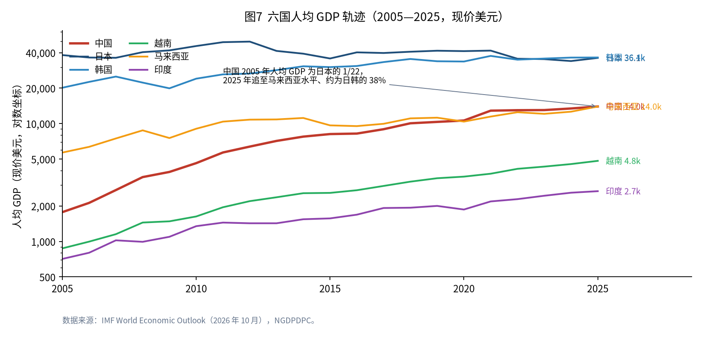
居民消费率（世界银行口径）上，中国长期处在六国最低区间：2024 年约 40%，而马来西亚约 61%、印度约 57%、越南约 54%、日本约 53%、韩国约 49%。但中国居民实际消费增速在多数阶段仍高于日韩，说明“消费总量扩张快、占 GDP 比重难抬升”可以并存——投资与出口份额、住房相关支出统计口径、预防性储蓄等因素共同作用。
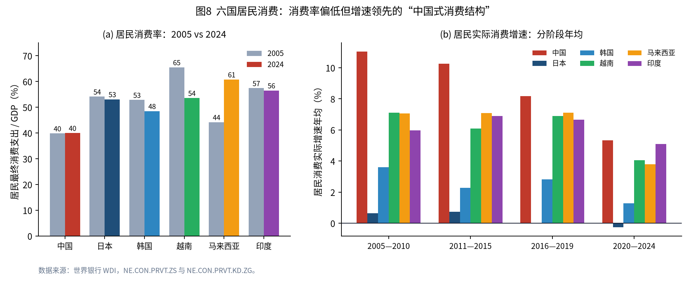
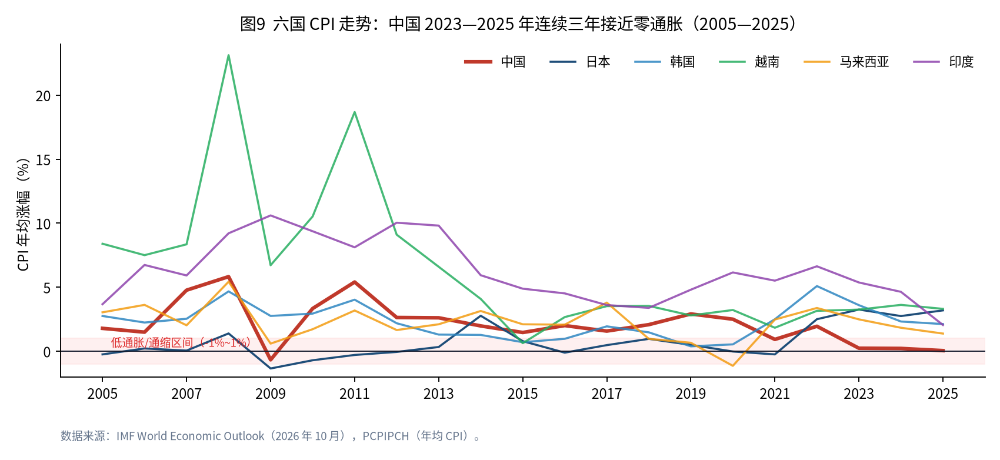
物价比较中，越南、印度在早期有更高通胀波动；日本长期低通胀；中国 2023—2025 年进入近似零通胀区间，更接近“需求约束型低通胀”，而非供给冲击型高通胀。
以美元计商品出口额，2024 年相对 2005 年：越南约 12.5 倍、中国约 4.7 倍、印度约 4.5 倍、韩国约 2.4 倍、马来西亚约 2.3 倍、日本约 1.2 倍。出口依存度则分化：中国、马来西亚下降，越南、韩国上升。这对应东亚供应链再配置——中国向价值链上游与完整制造体系延伸，越南承接劳动密集型与部分电子组装环节。
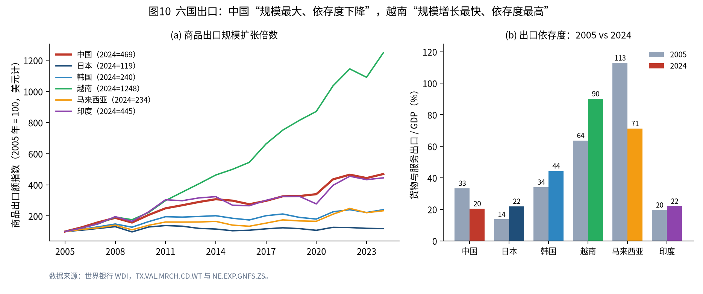
IMF 广义政府收入/GDP（2025 年）：日本 36.3%、韩国 33.6%、中国 25.0%、越南与印度约 20.9%、马来西亚 19.9%。债务率方面，日本仍最高（约 205%），中国从 2015 年约 41% 升至 2025 年约 99%，升幅显著；越南债务率反而下降。对中国而言，“宏观税负回落 + 债务率上升 + 老龄化支出上升”是下一阶段财政约束的核心三角。
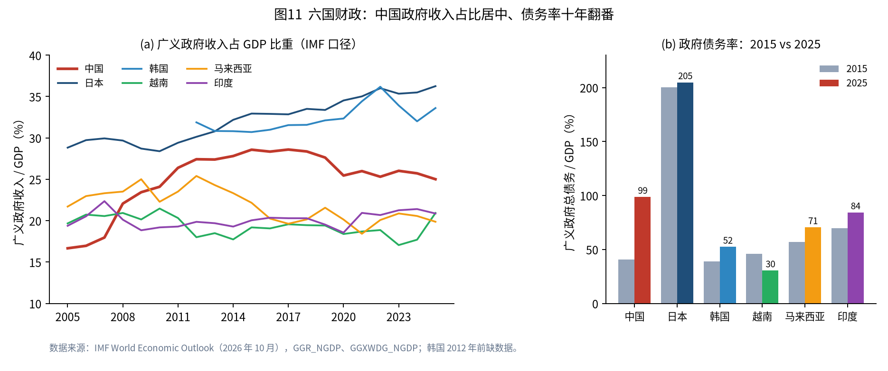
| 维度（2020—2025 为主） | 中国相对位置 | 启示 |
|---|---|---|
| 增长速度 | 高于日韩，略低于越、印 | 已不是“速度冠军”，但仍具规模优势 |
| 消费率 | 六国最低 | 扩内需是结构任务，非短期刺激可毕其功 |
| 物价 | 近年最低通胀组 | 政策空间在需求侧，通缩风险需警惕 |
| 出口 | 规模第一，依存度下降 | 外需仍重要，但不可再作为唯一引擎 |
| 财政 | 收入中等、债务上升快 | 减税与增支需更精确的优先级 |
| 人口 | 深度老龄化，速度快于日韩历史路径 | “未富先老”约束强于日韩当年 |
按联合国 WPP2024 中方案，65 岁及以上人口占比：2025 年日本约 30%、韩国约 20%、中国约 15%、越南约 9.5%、马来西亚约 8%、印度约 7.4%。到 2050 年，韩国或升至约 40%，日本约 38%，中国约 31%，越南约 20%，马来西亚约 17%，印度约 15%。
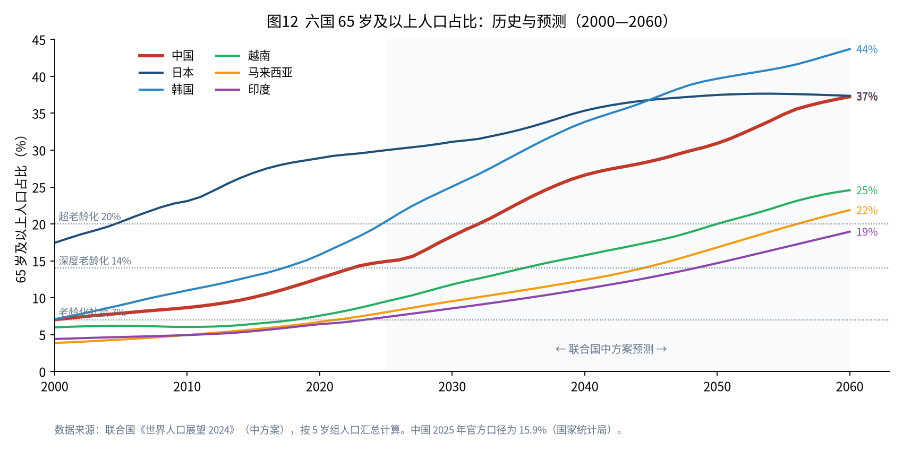
速度更关键：日本从老龄化社会（7%）到深度老龄化（14%）用了约 24 年（1970—1994），中国约 22 年（2001—2023）；从 14% 到 20%，日本用了约 11 年，中国按中方案可能只需约 9 年（2023—2032）。韩国更快，已于 2024 年末进入超老龄化。中国进入深度老龄化时人均 GDP 约 1.3 万美元，约为日本 1994 年水平的三分之一，呈现典型的“未富先老”。
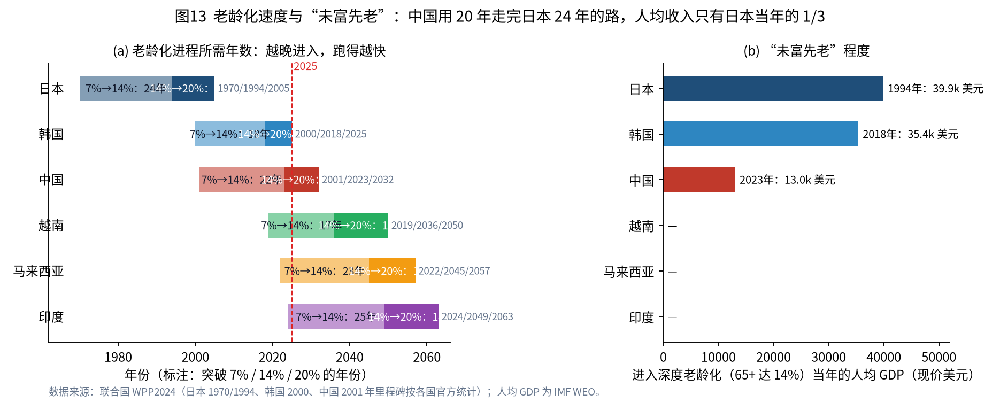
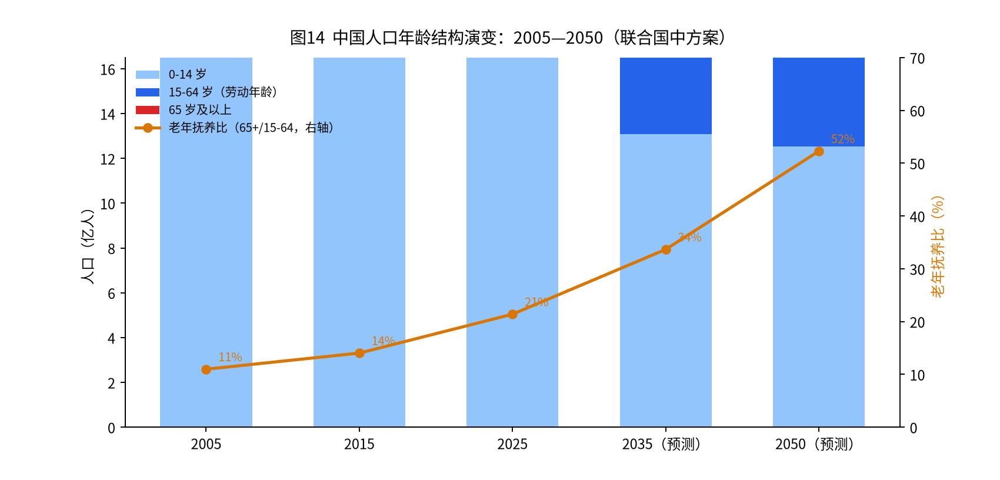
联合国中方案显示：中国劳动年龄人口占比将由 2025 年约 70% 降至 2050 年约 59%；80 岁及以上高龄人口占比由约 2.6% 升至约 10.5%；老年抚养比由约 21% 升至约 52%。这意味着“每 2 个劳动年龄人口对应 1 个 65 岁及以上老人”的社会即将在一代人时间内到来。
| 领域 | 正在发生与可预期的变化 | 国际经验参照 |
|---|---|---|
| 劳动力市场 | 劳动年龄人口下降，护理、医疗、家政等岗位缺口扩大；延迟退休自 2025 年起施行（男职工逐步至 63 岁，女职工分别至 55/58 岁）；大龄就业与技能更新成为政策重点。 | 日本已高度依赖女性与老年再就业、外国人照护；韩国超老龄化后劳动参与压力陡增。 |
| 社会保障 | 基本养老保险参保超 10.7 亿人；企业年金、个人养老金仍薄；长护险 2025 年末覆盖约 3.09 亿人、享受待遇约 193 万人，2026 年起全国推开，目标 2028 年底基本全覆盖。 | 日本介护保险费用额 2025 年度约 12.2 万亿日元；2040 年护理人力缺口估约 57 万。 |
| 家庭结构 | 少子化叠加老龄化，使“一对中年夫妻赡养双方父母”的压力上升；独居、空巢、失能照护从家庭内部问题外溢为公共服务问题。 | 日韩均经历家庭照护功能弱化与机构/社区服务扩张。 |
| 消费结构 | 银发消费、医疗康养、旅居、助餐助浴等服务需求上升；商品消费中耐用品与住房相关链条走弱；整体消费更强调确定性与性价比。 | 日本“银发市场”规模大但增长缓慢，关键在支付能力与护理人力。 |
| 空间与住房 | 人口向都市圈集中与乡村/中小城市收缩并存；空置住房、低效商办与酒店资产增加；适老化改造、电梯加装、社区嵌入式设施成为刚需。 | 日本 2023 年空置住宅约 899 万套、空置率 13.8%，地方城市酒店转介护设施已成常态。 |
| 公共服务 | 养老床位总量自 2020 年峰值回落，但护理型床位占比上升（2025 年注册养老机构护理型床位占比 69.9%）；供给从“有床位”转向“有护理能力”。 | 日韩均经历床位数量扩张后向质量与居家服务转型。 |
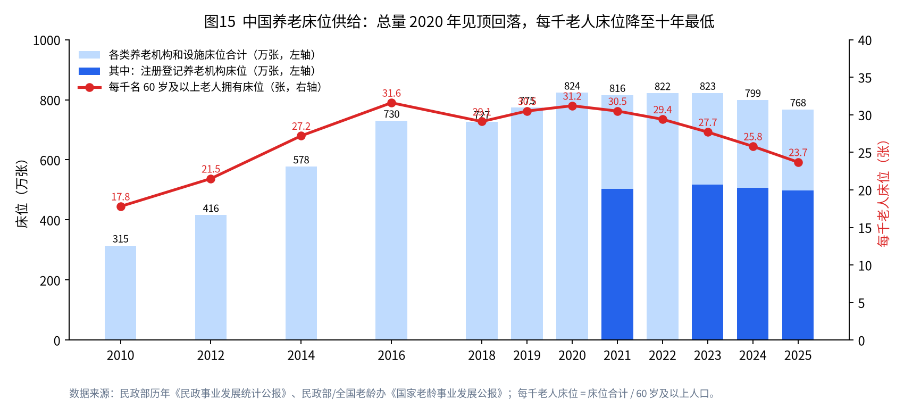
截至 2025 年末，全国各类养老机构和设施 39.5 万个，床位合计 767.9 万张；其中注册登记养老机构 3.92 万个、床位 498.4 万张。按 60 岁及以上人口计算，每千名老年人约 23.7 张床，较 2016 年峰值约 31.6 张明显下降。床位“三连降”并不等于养老倒退，更多反映低效床位出清、选址向城区收缩、监管趋严，以及需求从“能住”转向“能护”。
三重力量把“存量改造”推到台前：
| 类型 | 典型做法 | 启示 |
|---|---|---|
| 整栋改造 | 上海虹口雨花大酒店、石油大厦等改建养老/护理综合体；北京顺义东竹园宾馆改普惠养老；成都老城区酒店改养护院 | 适合长期闲置、产权清晰、可做消防与结构加固的物业 |
| 租赁轻资产 | 太保常州项目长租空置酒店改造，改造投入约 7462 万元、约 3000 元/㎡ | 降低拿地成本，但租金与入住率爬坡构成主要风险 |
| 局部改造 | 日本栃木格兰酒店将部分客房改老人ホーム；中国部分度假酒店做适老化旅居套餐 | 适合仍有旅游/商务现金流的物业，养老作为第二曲线 |
| 培疗机构转型 | 北京培训疗养机构改革，首批项目改造成本约为新建一半 | 国有闲置资产是普惠养老最快的可控供给源 |
基于以下可检验假设做情景推演（详见数据文件 scenario_nursing_beds_2025_2035.csv）：
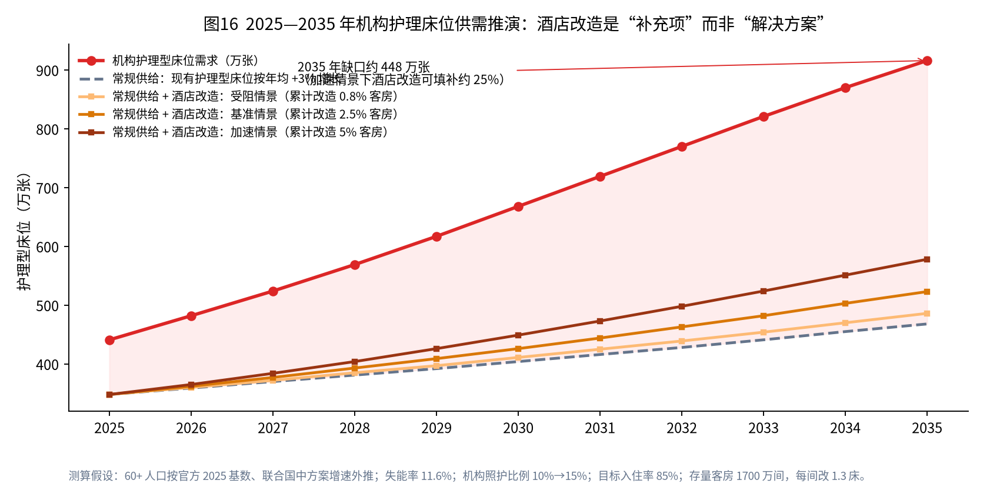
| 指标 | 2025 | 2035 |
|---|---|---|
| 60 岁及以上人口（万人） | 32,338 | 约 44,800 |
| 失能老年人（万人，按 11.6%） | 约 3,750 | 约 5,190 |
| 机构护理型床位需求（万张） | 约 441 | 约 916 |
| 常规供给（万张） | 348 | 约 468 |
| 改造前缺口（万张） | 约 93 | 约 448 |
| 加速情景酒店改造形成床位（万张） | 0 | 约 110 |
| 加速情景对缺口的覆盖率 | — | 约 25% |
将经济增长、消费率、物价稳定（接近 2% 为优）、出口扩张、财政空间、人口结构六项在六国间做组内标准化（10 分为当期最优）：
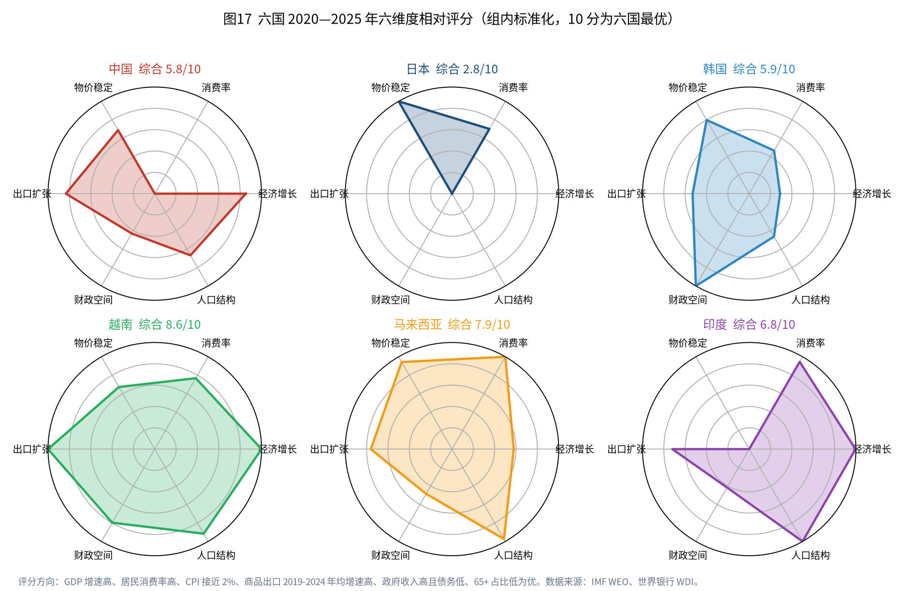
| 国家 | 经济增长 | 消费率 | 物价稳定 | 出口扩张 | 财政空间 | 人口结构 | 综合均分 |
|---|---|---|---|---|---|---|---|
| 越南 | 10.0 | 7.7 | 6.7 | 10.0 | 8.0 | 9.2 | 8.6 |
| 印度 | 10.0 | 9.5 | 0.0 | 7.2 | 4.2 | 10.0 | 6.8 |
| 马来西亚 | 5.8 | 10.0 | 9.4 | 7.6 | 4.8 | 9.7 | 7.9 |
| 中国 | 8.5 | 0.0 | 6.9 | 8.3 | 4.3 | 6.7 | 5.8 |
| 韩国 | 2.9 | 4.7 | 8.0 | 5.3 | 10.0 | 4.6 | 5.9 |
| 日本 | 0.0 | 7.0 | 10.0 | 0.0 | 0.0 | 0.0 | 2.8 |
| 方向 | 含义 |
|---|---|
| 扩内需 | 重点不在再刺激一轮商品零售，而在稳定收入预期、降低住房与育儿养老的预防性储蓄、提升服务消费可及性。 |
| 财政 | 在税负难以回到 2012 年峰值的前提下，优化支出结构：保基本养老医疗、保护理、保科技，压低低效投资。 |
| 人口与人力 | 延迟退休只是起点；护理职业化、长期护理保险全国推开、老年人力资源开发决定老龄化能否“可负担”。 |
| 房地产 | 从开发逻辑转向运营与改造逻辑；酒店/培疗/商办改建养老要正视消防合规与护理人力，避免“改了壳、没有服务”。 |
| 开放与产业 | 出口仍是稳定器，但需与东盟制造分工、国内消费升级形成“双循环”真实闭环，而不是口头闭环。 |
data/china_annual.csv：GDP 增速、CPI、社零、出口、人口等主要来自历年《国民经济和社会发展统计公报》；现价 GDP、税收、一般公共预算等采用《中国统计年鉴 2025》修订数；土地出让与 2025 年财政数据来自财政部。说明：不同机构对同一指标的口径、估值时点与修订频率不同，正文已尽量标注；跨口径数字不宜直接加减。本报告仅供研究参考。